Reducing inequalities and ensuring no one is left behind are integral to achieving the Sustainable Development Goals.
Inequality within and among countries is a persistent cause for concern. Despite some positive signs toward reducing inequality in some dimensions, such as reducing relative income inequality in some countries and preferential trade status benefiting lower-income countries, inequality still persists.
COVID-19 has deepened existing inequalities, hitting the poorest and most vulnerable communities the hardest. It has put a spotlight on economic inequalities and fragile social safety nets that leave vulnerable communities to bear the brunt of the crisis. At the same time, social, political and economic inequalities have amplified the impacts of the pandemic.
On the economic front, the COVID-19 pandemic has significantly increased global unemployment and dramatically slashed workers’ incomes.
COVID-19 also puts at risk the limited progress that has been made on gender equality and women’s rights over the past decades. Across every sphere, from health to the economy, security to social protection, the impacts of COVID-19 are exacerbated for women and girls simply by virtue of their sex.
Inequalities are also deepening for vulnerable populations in countries with weaker health systems and those facing existing humanitarian crises. Refugees and migrants, as well as indigenous peoples, older persons, people with disabilities and children are particularly at risk of being left behind. And hate speech targeting vulnerable groups is rising.
TARGETS
10.1 By 2030, progressively achieve and sustain income growth of the bottom 40 per cent of the population at a rate higher than the national average
10.2 By 2030, empower and promote the social, economic and political inclusion of all, irrespective of age, sex, disability, race, ethnicity, origin, religion or economic or other status
10.3 Ensure equal opportunity and reduce inequalities of outcome, including by eliminating discriminatory laws, policies and practices and promoting appropriate legislation, policies and action in this regard
10.4 Adopt policies, especially fiscal, wage and social protection policies, and progressively achieve greater equality
10.5 Improve the regulation and monitoring of global financial markets and institutions and strengthen the implementation of such regulations
10.6 Ensure enhanced representation and voice for developing countries in decision-making in global international economic and financial institutions in order to deliver more effective, credible, accountable and legitimate institutions
10.7 Facilitate orderly, safe, regular and responsible migration and mobility of people, including through the implementation of planned and well-managed migration policies
10.A Implement the principle of special and differential treatment for developing countries, in particular least developed countries, in accordance with World Trade Organization agreements
10.B Encourage official development assistance and financial flows, including foreign direct investment, to States where the need is greatest, in particular least developed countries, African countries, small island developing States and landlocked developing countries, in accordance with their national plans and programmes
10.C By 2030, reduce to less than 3 per cent the transaction costs of migrant remittances and eliminate remittance corridors with costs higher than 5 per cent
Click the respective images to know more about the SDG's:
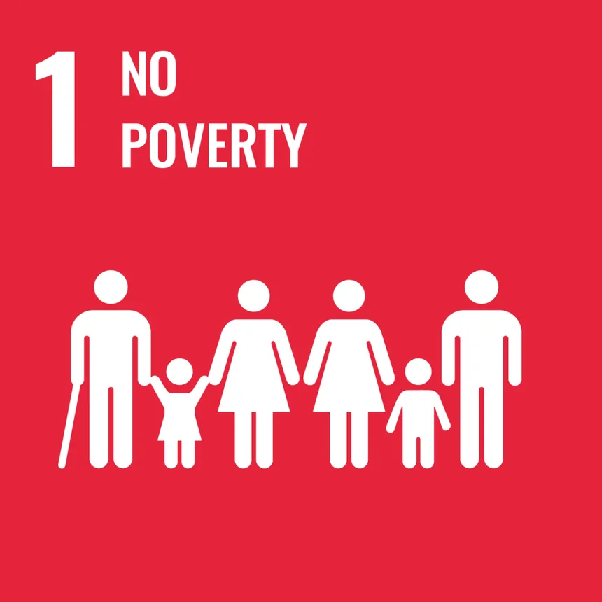
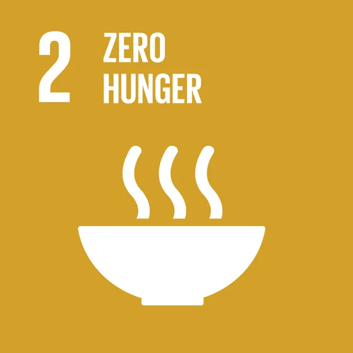
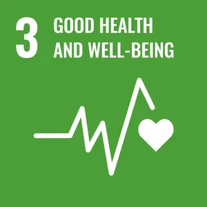
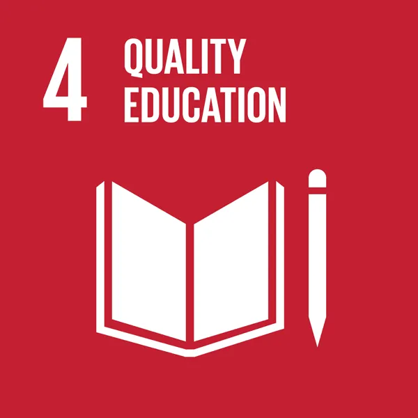
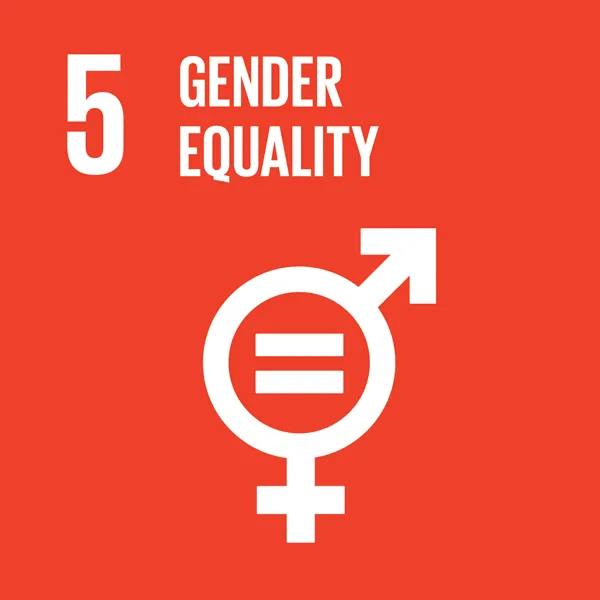
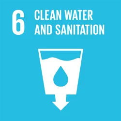
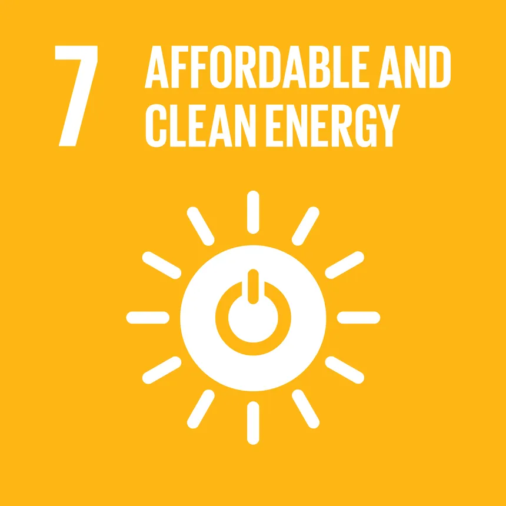
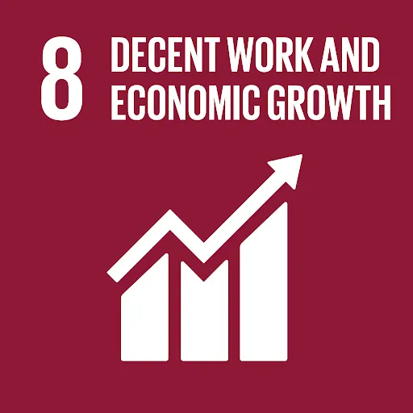
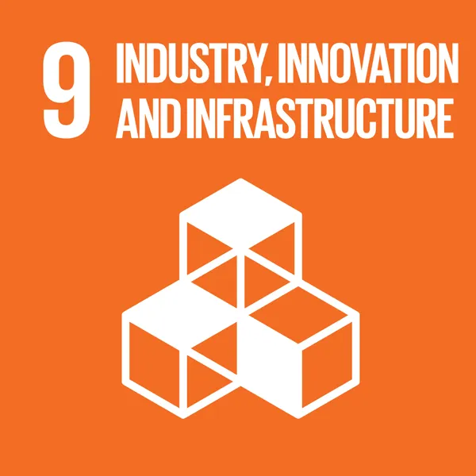


 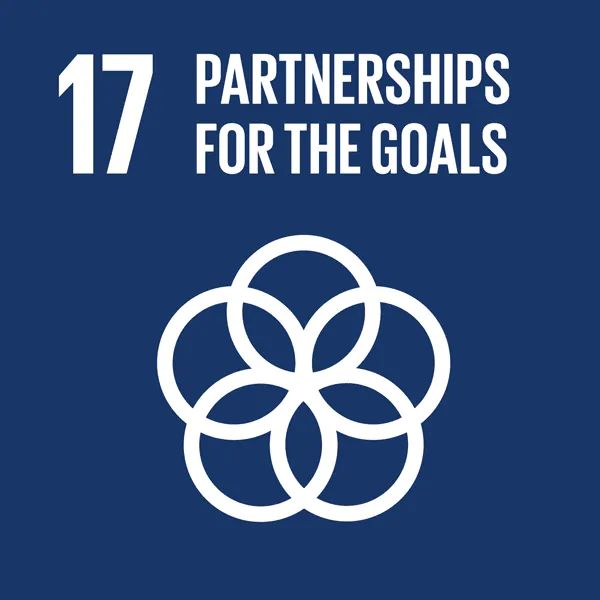
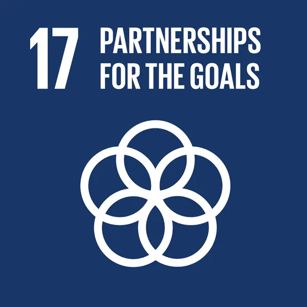